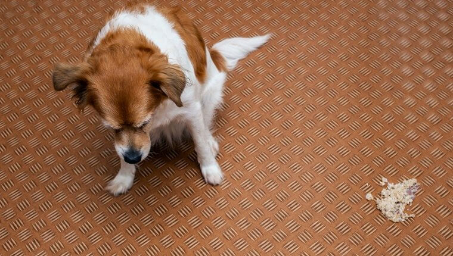
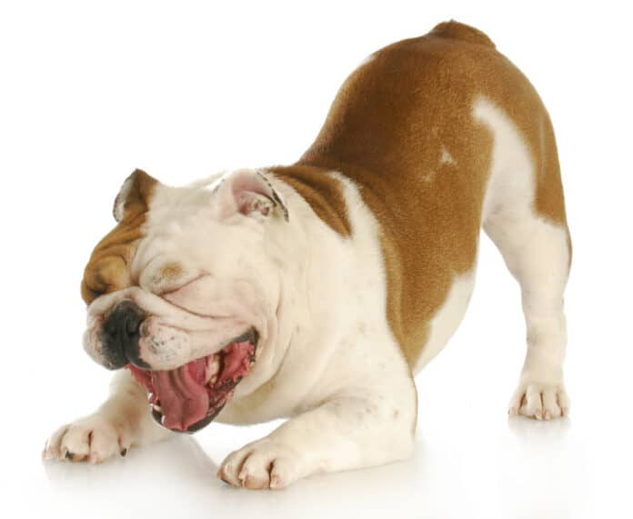

اگه شما هم نگهداری از سگها رو به عنوان حیوون خونگی تجربه کرده باشین، میدونین که چقدر سریع یکی از اعضای خانواده محسوب میشن و کوچکترین مشکلی که براشون پیش بیاد چقدر ناراحتی و نگرانی برامون ایجاد میکنه. استفراغ سگ یه اتفاق خیلی طبیعیه که هر سگی توی زندگیش ممکنه چندین و چند بار باهاش مواجه بشه ولی این بالا آوردن میتونه دلایل خیلی متعددی داشته باشه. اما بالا آوردن سگ نشانه چیست؟
گاهی ممکنه علت بالا آوردن سگ، نوعی بیماری گوارشی در سگ یا شاید یه بدخوراکی ساده باشه که خیلی سریع باید درمان بشن تا سلامت سگمون به خطر نیوفته. خیالت راحت، ما این راهو بلدیم و پت پرس تو این مطلب در مورد رایجترین بیماریهایی هست که میتونن علت استفراغ سگها بشن، روش درمان و پیشگیری از اونها صحبت میکنه و بهتون میگه چرا سگها استفراغ میکنه.

استفراغ سگ نشانه چیست؟ آیا بالا آوردن سگ طبیعیه؟
چرا سگ بالا میاره؟ سادهترین چیزی که میتونه باعث استفراغ سگ شما بشه، بدخوراکیه.
حالا این بدخوراکی ینی چی؟
یعنی هرشرایطی که سیستم گوارش و معدهش رو اذیت کنه و شرایط طبیعی هضم شدن غذا رو بهم بزنه؛ که میتونه شامل:
- خوردن خیلی سریع غذا
- خوردن یهویی حجم بزرگی از غذا
- قورت دادن قسمتی یا کل اسباببازی یا هرچیز غیر خوراکی
علت استفراغ سگ بعد از خوردن غذا
برای بعضی از ما پیش اومده که سگمون بعد از غذا خوردن شروع به استفراغ میکنه، خب دلیل این اتفاق چیه؟
- تغییرغذای سگ: تغییرات ناگهانی غذایی که به سگتون میدین (چه نوع غذا و چه حتی برندش) ممکنه باعث مشکلات گوارشی بشه و معده حیوون رو اذیت کنه.
- اضطراب یا ترس: اگه حیوون همراه سگهای دیگه غذا میخوره ممکنه به خاطر رقابت با اونا تو غذا خوردن عجله داشته باشه و به همین خاطر معدهاش رو بیش از حد پر کنه، غذا رو خوب نجوه، مقدار زیادی هوا وارد شکمش بشه یا مقدار بزاقی که همراه غذا میخوره کاهش پیدا کنه. بعلاوه استرس و عصبی بودن میتونه اسید معده رو افزایش بده و معده سگ رو بیشتر اذیت کنه.
- از طعم غذا خیلی خوشش میاد: اگه سگ غذاش رو خیلی دوست داشته باشه، ممکنه خیلی سریع غذا بخوره و در نتیجه بعدا بالا بیاردش. میتونین حجم وعدهها رو کم کنین یا غذا رو تو یک بشقاب بزرگ صاف بریزین تا مجبور شه آرومتر غذا بخوره.
- خوردن علف: بعضی وقتا سگهایی که به هر علت حالشون خوش نیست ممکنه علف بخورن تا با بالا آوردن معدهشونو خالی کنن. خیلی وقتا هم با این کار حالشون خوب میشه. فقط حواستون باشه که بدن حیوون کم آب نشه.
وقتی سگ بالا میاره چیکار کنیم؟
سوال مهم خیلی از ما صاحبان سگ اینه که بعد از استفراغ سگ چه کنیم؟ اگه سگتون یه بار استفراغ کرد و هیچ علائمی دیگهای نداشت، احتمالا هیچ مساله جدی تهدیدش نمیکنه و بعد از مدتی حالش خوب میشه.
اگه هم میدونید که به خاطر پرخوری و تندخوری بالا آورده دیگه بهش غذا ندید و سعی کنید به خوردن آب ترغیبش کنید تا حالش بهتر بشه.
اما اگه هر کدوم از علائم زیر رو دیدین با دامپزشکتون تماس بگیرین و ازش راهنمایی بخواین.
- بالا آوردن متعدد در طی روز
- استفراغ شدید
- یکبار استفراغ ولی با حجم خیلی زیاد
- تب
- بیحالی
- استفراغ خونی
- اسهال خونی
- داشتن حالت تهوع در سگ
- همراه شدن استفراغ با اسهال
آیا میتونم داروی ضدتهوع برای سگ استفاده کنم؟
بعضی از صاحبان سگ با مشاهده استفراغ به دنبال درمان خانگی و بهترین دارو برای استفراغ سگ میگردن تا حالت تهوعش رو برطرف کنن و به دامپزشک مراجعه نمیکنن!
اما همونطور که در این مقاله توضیح میدیم بالا آوردن در سگ دلایلی متعددی داره و بعضی از اونا خطرناک هستن و ممکنه جون سگتون رو تهدید کنه. استفاده خودسرانه از دارو و قرص ضدتهوع برای سگ نه تنها مشکل رو برطرف نمیکنه که میتونه باعث تشدید مشکل و بیماری بشه.
دامپزشک بعد از معاینه و تشخیص دلیل استفراغ در صورت لزوم خودش داروهای لازم رو تجویز میکنه. اگر سگت استفراغ میکنه، با دامپزشک آنلاین مشورت کن برای درمان بالا آوردن سگ اول باید بدونیم دلیل بالا آوردنش چی بوده. دلایل متعددی میتونن باعث استفراغ کردن سگ بشن که هرکدوم روش درمان متفاوتی داره. ما در ادامه برخی بیماریهایی که میتونن علت اسهال و استفراغ در سگ بشن رو بهتون معرفی میکنیم. اما یادتون باشه مهمتر از همه اینا مراجعه فوری و به موقع به دامپزشکه!
مثلا اگه دقیقا بعد از پیادهروی توی یه عصر تابستونی سگتون شروع به استفراغ کردن کرده باشه، مظنون اصلی گرمازدگی هست. اگه کیسه زبالهتون بیدلیل پاره شده، مظنون اصلی زباله یا یه ماده سمی میتونه باشه. پس سعی کنین به جزییات رفتاری سگتون دقت کنین و برای مراجعه به دامپزشک خودتون همراهش باشید و فرم رو پر کنین. در ادامه در مورد هرکدوم از این بیماریها بیشتر صحبت میکنیم: انگلها دو نوع هستن: درمان این انگلهای رودهای رو باید جدی بگیرین چون نه تنها آسیبی که به سگتون میزنن خیلی زیاده بلکه از طریق مدفوع سگ شما، تخم این انگلها از بدن سگ خارج میشه و سلامتی خودتون رو هم به خطر میندازه. درمان انگلها با توجه به نوع انگل انتخاب میشه و به صورت مصرف دارو هست. برای سگها قرصهای ضد انگلی تجویز میشه که با توجه به نوع قرص و جثهی سگ ممکنه توصیه بشه ماهیانه یا سه ماه یکبار مصرف کنه. این قرصها باعث پیشگیری از انگل گرفتن سگ عزیزتون میشه. اگه قرص ضد انگل رو هنوز شروع نکردین در موردش با دامپزشکون صحبت کنین و ازش راهنمایی بخواین. اگه قصد دارین حیوون جدیدی به خونه بیارین حتما پیش دامپزشک ببرینش تا حیوونهای دیگهتون رو در معرض انگل قرار نداده باشین. دیتسمپر یه بیماری ویروسی به شدت واگیردار و کشنده هست. این بیماری میتونه علت استفراغ و بی اشتهایی سگ باشه و به قدری شایع و خطرناک بوده که براش یه واکسن مخصوص در نظر گرفته شده تا در برابرش مقاوم بشن. اگه دوس دارین بدونین دیگه چه واکسنهایی برای سگها لازم و حیاتی هست، میتونین مقاله واکسن سگ بیشتر در موردش بخونین. دیستمپر یه بیماری ویروسی هست و تنها کاری که میشه انجام داد قوی نگه داشتن سگ تا زمانی که دورهی بیماری بگذره، هست. کارهایی که دامپزشک ممکنه بر اساس شرایط سگتون انجام بده شامل موارد زیر میشه: ما یه مطلب کامل در مورد اینکه بیماری دیستمپر چه بیماریی هست، سگها چطور بهش مبتلا میشن، روش درمان و پیشگیریش چطوریه داریم که توی مقاله دیستمپر سگ میتونین مطالعهاش کنین. بیماری پاروا در سگ نوعی بیماری عفونی هست که باعث استفراغ و اسهال خونی توی سگها میشه. میزان کشنده بودن این بیماری به قدری زیاد بوده که درست مثل بیماری دیستمپر باید سگها رو در برابرشون واکسینه کرد تا از کوچیکی مقاومت لازم در برابر این بیماری رو پیدا کنن.  همونطوری که گفتیم این بیماری یه بیماری ویروسی هست و ویژگی بیماریهای ویروسی اینه که درمان ندارن و فقط باید دروهاشون بگذره. کمکی که شما و دامپزشک میتونید به سگتون بکنید اینه که توی این دوره مراقبتهای لازم رو انجام بدین تا بیماری از پا درش نیاره. مهمترین کاری که باید انجام بدین جدی گرفتن واکسیناسیون سگتون و به موقع انجام دادنش هست. یادتون باشه حتی بعد از واکسینه شدن هم بازم ممکنه سگتون این بیماری رو بگیره ولی علائمش خفیف میشن و احتمال زنده مونش خیلی خیلی بیشتر میشه. کبد یکی از اعضای مهم بدن هست که در هضم غذا، لخته شدن خون و خارج کردن مواد سمی از بدن نقش مهمی داره. مشکلات کبدی معمولا قابل درمان هستن ولی اگه به حال خودشون رها بشن، میتونن باعث مشکلات مغزی خطرناکی بشن. یکی از دلایل استفراغ سگ میتونه نارسایی کبدی باشه . روش انتخابی درمان، بستگی به میزان پیشرفتگی بیماری و دلیل اولیهی شروع این بیماری داره. روشهای درمان شامل: برای پیشگیری از مشکلات کبدی، معاینات و واکسنهای سالانهی سگ رو فراموش نکنین. مطمئن بشین که دامپزشک از داروهایی که سگتون مصرف میکنه مطلع هست. رژیم غذایی توی پیشگیری از مشکلات کبدی نقش خیلی مهمی داره. اگه به سگتون غذاهای پرچرب میدین، بدونین که سلامت کبدش رو به خطر انداختین. بهترین رژیم غذایی، رژیمی است که توسط دامپزشک متخصص تغذیه و بر اساس ویژگی های اختصاصی سگ شما نوشته شده باشه. خیالت راحت، ما این راهو بلدیم و برای این کار میتونین از سرویس برنامه غذایی پت پرس استفاده کنین کلیه توی بدن سگها هم مثل بدن انسانها نقش خیلی حیاتیی رو بازی میکنه. حفظ تعادل مواد داخل خون و دفع ضایعات بدن از طریق ادرار کاریه که کلیه برای بدن انجام میده. علاوه بر این کنترل فشار خون و سطح فسفر بدن هم به عهدهی کلیه هست. مشکلات یا بیماری کلیه سگ ممکنه بر اثر مصرف دارو یا رژیم غذایی نامناسب، عفونت، نرسیدن اکسیژن، یا بیماریهای دیگه دچار مشکل بشه.
به این ترتیب که باکتریی که باعث خرابی و مشکلاتی دندانی میشه با پیشرفته شدن بیماری، وارد خون میشه و آسیبهای جبرانناپذیری به کلیه، کبد و قلب سگ میزنه. با توجه به میزان پیشرفتگی بیماری دامپزشکتون درمانهای مختلفی رو میتونه در نظر بگیره. اینجا به چند موردش اشاره میکنیم: گرمازدگی مسئلهای هست که به اندازهی کافی به خطرناکش بودنش برای سگها پرداخته نشد. برای ما که توی کشوری زندگی میکنیم که خیلی از مناطقش تابستونهای گرمی داره خوبه که کمی بیشتر در موردش صحبت بشه. آگاهی به تاثیری که دمای بالای هوا ممکنه روی سگهامون بذاره باعث میشه حواسمون بیشتر جمع باشه. با افزایش دمای هوا بدن ما انسانها شروع به تعریق میکنه و این تعریق باعث خنک شدنمون میشه. اما سگها، مثل ما، غدد تعریقی ندارن. کف دست و پاهاشون امکان عرق کردن داره که اونم به نسبت حجم بدنشون خیلی کمه. پس گرمای زیادی بدنشون راهی برای خارج شدن نداره. این گرمای حبس شده توی بدن میتونه باعث از کار افتادن اعضای داخلی بدن و حتی قلبشون بشه و میتونه علت بی حالی و استفراغ سگ یا توله سگ باشه. بهتره که وقتی با علائم اولیه مواجه میشین به یه جای خنک ببرینش و با دامپزشک تماس بگیرین تا هرچه زودتر از پیشروی گرمازدگی جلوگیری بشه. نه! سگهایی که موهای ضخیم و بلندی دارن یا خیلی جوون یا بینهایت پیرن نیاز به مراقبت بیشتری در برابر گرمازدگی دارن. علاوه بر این نژادهایی که دست و پاهای کوتاه و بینی پخ دارن مثل شیتزو، باکسر، پاگ و بولداگها حساسیت بیشتری در برابر گرمازدگی دارن. علاوه بر این سگهایی که به شدت فعال هستن یا جزء نژادهای شکارچی محسوب میشن مثل ریترویر یا شپردها هم در فصول گرم نیاز به مراقب بیشتری دارن. پیشنهاد میکنیم مقاله «گرمازدگی حیوانات خانگی» مطالعه کنین، تا با روش های پیشگیری و درمان گرمازدگی در حیوانات مختلف آشنا شوید. نکتهای که خیلی مهمه اینه که به استفراغ توله سگتون باید به چشم یه مسالهی مهم نگاه کنین. از اونجایی که بعد از ۶ هفتگی واکسنهای تولهسگها شروع میشن در مقابل خیلی از بیماریها ضعیف هستن و حتی با یکبار بالا آوردن هم باید دنبال دلیل استفراغ توله سگ بود و خیلی سریع به دامپزشک مراجعه کنین. چرا توله سگ بالا میاورد؟ بهترین کار اینه که ریسک نکنین و سریع با دامپزشک تماس بگیرین چون تولهها خیلی حساسن. اگه استفراغ ادامه داشت یا با اسهال همراه بود (مخصوصا اگه خونی بود، که میتونه علامت پاروویروس باشه) یا حیوون احساس بدی داشت (مثلا بیحالی یا بیاشتهایی)، حتما فوری از دامپزشک کمک بگیرین. بدن تولهها خیلی سریع کم آب میشه، مخصوصا زمانی که خروجی آب (استفراغ یا اسهال) از وروی (آبی که حیوون میخوره) بیشتر باشه. آب تمیز کافی در اختیار حیوون بذارین. اگه تمایلی به آب خوردن نشون نداد میتونین آب مرغ یا جوشونده استخون (البته بدون نمک) به ظرف آبش اضافه کنین. استفراغ سگها ممکنه انواع مختلفی داشته باشه که تا حدودی از روی رنگش میشه به علتش پی ببریم. در ادامه براساس رنگ استفراغ سگ بهتون میگیم که علت اون چه چیزایی میتونه باشه. وجود زرداب یا صفرا (که یک ماده زرد مایل به سبز رنگه) توی استفراغ یا بالا آوردن زرداب خالی اصلا خوب نیست و باید فورا با دامپزشک مشورت کنین چون صفرا اسیدیه و اگه این مشکل درمان نشه میتونه مری رو زخم کنه. شایعترین دلایل بالا آوردن زرداب شامل: استفراغ سبز رنگ میتونه به خاطر خوردن مواد سبز (مثل علف) یا به علت وجود صفرا باشه. حالت اول معمولا خود بخود برطرف میشه (حداکثر بعد از حدود یک روز)، اما در مورد بالا آوردن صفرا باید به دامپزشک مراجعه کرد. ممکنه به علت خوردن مدفوع یا انسداد روده ایجاد بشه. اگه استفراغ قهوهای بوی بدی میده و مکرر اتفاق میفته، فورا با دامپزشک تماس بگیرین. انسداد روده میتونه حیوون رو از بین ببره. بالا آوردن کف سفید در سگ با برگشت غذا متفاوته و اغلب نشونه بیماری در حیوونه؛ پس لازمه که بهش توجه کنید و اونو پیش دامپزشک ببرید. مخصوصا اگه کف سفید بالا آوردن سگ همراه با علائم دیگه مثل رفتارهای غیرعادی، بیتابی و پارس کردن زیاد باشه اغلب میتونه نشونه بیماریهای دیگه باشه: پس اگه یبار سگتون کف بالا آورد زیرنظرش بگیرید. اگه باز هم استفراغ کف سفید تکرار شد و سگتون رفتارهای غیرطبیعی هم داشت سریعا سگ رو پیش دامپزشک ببرید. چون بیماریهای بالا اغلب خطرناکن و مراجعه هرچه سریعتر به دامپزشکی میتونه جون سگتون رو نجات بده. استفراغ سگ به خودی خود نگران کننده است، چه برسه به اینکه توش خون هم وجود داشته باشه! اگه داخل استفراغ خون تازه دیدید این خون میتونه از هر بخشی از سیستم گوارشیش اومده باشه. پس در اولین قدم بهتره دهان و دندونای سگتون رو چک کنید چون در برخی موارد علت خون بالا آوردن سگ، عفونت و مشکل لثه و دندونهاست و قابل مشاهده است. اما اگه خون لخته شده است و سگتو علائمی مثل درد شکمی، اسهال، بیحالی و ضعف و … هم داره میتونه نشونه یه بیماری جدیتر در سگ باشه؛ مثل: در هر صورت وجود خون به هردلیلی که باشه یه مساله جدیه و لازمه که سگتون رو برای معاینات بیشتر پیش دامپزشک ببرید. پزشک با بررسی و انجام آزمایشات لازم دلیل اصلی استفراغ خونی سگ رو مشخص و نسبت به درمان اقدام میکنه. به احتمال زیاد مشکل از زردابه. البته بارداری هم میتونه یک علت دیگه استفراغ سگ در صبح باشه که بعد از زایمان برطرف میشه. ممکنه کم شدن حجم و بیشتر شدن تعداد وعدههای غذایی یا دادن یک میان وعده کوچیک به حیوون قبل از خواب مشکل رو حل کنه، یا شاید یک بیماری یا مشکل جدیتر در کار باشه. بعضی از دلایل دیگه استفراغ سگ در صبح ایناست: پانکراتیت، بیماری التهابی روده (IBD)، و کولیت. حالت تهوع یا اوق زدن یعنی زمانی که حیوون میخواد بالا بیاره ولی چیزی بیرون نمیاد (البته بعضی وقتا ممکنه یکم مخاط یا زرداب هم خارج بشه). علت حالت تهوع سگ چیه؟ علت استفراغ سگ میتونه به بیماریهای متفاوتی برگرده. بیماریهای ویروسی مثل دیستمپر و پاروا ویروس، بیماریهای کبدی و کلیوی و یا حتی گرمازدگی همگی میتونن باعث بالا آوردن سگ بشن. اگه فقط یه بار این اتفاق بیوفته، زیاد جای نگرانی نیست ولی وقتی سگ به صورت متعدد استفراغ کنه حتما باید علتشو فهمید و از یه دامپزشک برای درمانش کمک گرفت. تا حالا شده سگتون استفراغ کنه؟ دلایل و علت بالا آوردن سگ چی بوده؟ تجربههاتون رو با قسمت کنین و اگه سوالی دارین توی قسمت نظرات با ما در میون بگذارین. منبع: pets.webmd.com

دلایل و درمان استفراغ کردن سگ

انگلهای رودهای؛ علت خطرناک بالا آوردن سگ
علائم انگلهای گوارشی
درمان انگلهای رودهای
پیشگیری از انگلهای رودهای
بیماری دیستمپر در سگها
علائم بیماری دیستمپر در سگها

درمان اسهال و استفراغ توله سگ یا سگ بالغ به خاطر بیماری دیستمپر
بیماری پاروا ویروس دلیل دیگر استفراغ در سگها
علائم بیماری پاروویروس
درمان بیماری پاروا ویروس
پیشگیری از بیماری پاروا ویروس
مشکلات کبدی دلیل بالا آوردن سگ
دلایل نارسایی کبدی
علائم نارسایی کبدی
درمان استفراغ سگ و نارسایی کبدی
پیشگیری از نارسایی کبدی
سفارش آسان از طریق اپلیکیشن یا پر کردن فرم در صفحه برنامه غذایی

نارسایی کلیوی در سگها
علائم نارسایی کلیوی در سگها
درمان نارسایی کلیوی در سگها
پیشگیری از نارسایی کلیوی در سگها

گرمازدگی در سگها
علائم گرمازدگی در سگها
آیا همهی سگها نسبت به گرمازدگی به یک میزان حساسن؟
اگه سگم گرمازده شد چیکار کنم؟
چطوری از گرمازدگی سگم پیشگیری کنم؟
علت استفراغ یا بالا آوردن توله سگ چیه؟
درمان استفراغ توله سگ
انواع رنگ استفراغ سگ
زرداب بالا آوردن سگ
استفراغ سبز رنگ سگ
استفراغ قهوهای سگ
علت استفراغ کف سفید در سگ چیه؟
علت و درمان استفراغ خونی در سگ
علت بالا آوردن سگ در صبح
حالت تهوع در سگ
جمع بندی

سلام، سگ من امروز یرای اولین بارش گوشت خورد و الان تمام چیز هایی که خورده رو بالا اورده، هر چند دقیقه ای یه بار بالا میاره و این آخری ها کف سفیده، دسترسی به دامپزشکی ندارم چکار کنم میشه بگید
سلام النا عزیز، گوشتی که خورد بدون ادویه و سیر و پیاز پخته شده بود? زمانی که سگ ها بالا میارن اولین کاری که واجبه انجام بدین اینه که آب و غذا رو از دسترسشون خارج کنین و دوین کار مهم مشورت با دامپزشک هست، اگر به دامپزشک خودش دسترسی نداشتین میتونین از دامپزشک های پت پرس کمک بگیرید از طریق اپلیکیشن پت پرس.
سگ من یه بار صبح یه مقدار بالا اورد به رنگ سبز یه بارم الان بالا اورد ولی بیشتر به رنگ سبز بازم قرص انگل هم تازه خورده ولی همون روزیم که قرص خورد بالا اورد.موهاشو هم تازه کوتاه کردم فقط ما به مدت ۶ ساعت در روز برقامون میره میترسم گرمازده شده باشه تورو خدا بگید چیکار کنم دامپزشکی شهرمونم قتلگاهه فقط به فکر جیبشونن اصلا هم کار انجام نمیدن دکتر چیکار کنم حالش بد نشه دوباره😭😭
سلام هدیه جان وقتت بخیر، یعنی قرص انگل رو بالا آورد? ببینین رنگ سبز استفراغ میتونه دلیلش خوردن گیاه باشه ( دقت کنین که برخی گیاهان سمی هستن) یا ممکنه مشکل صفراوی باشه. حتما باید درباره استفراغ فوری با دامپزشک مشورت بشه.
سلام خسته نباشید سگ من از دیروز تا الان اسهال استفراغ داره هرچی خورده بود بالا اورده الانم کف سفید بالا میاره .فقط پری روز برای اولین بار خوروش سبزی بهش دادم میشه بخاطر این باشه ؟ممنون میشم راهنمایی کنید 💙
سلام محمد عزیز ، بله احتمالا به خاطر همین موضوعه کلا باید برنامه غذایی ثابتیو در نظر بگیرین یا غذای خشک و کنسرو و یا غذای خونگی بالانس شده توسط دامپزشک که حاوی مواد غذایی سازگار با سیسنم گوارشیشون باشه تا دچار این مشکلات نشن، در صورت تمایل میتونین به کلینیک آنلاین مراجعه کنین که بهتر بتونیم راهنماییتون کنیم. با مشاوره دامپزشکی آنلاین کنار شما هستیم (سوال مستقیم و تخصصی از دامپزشکان پت پرس)
سلام سگ من دیشب قهوه ای رنگ بالا آورد دلیلش چی میتونه باشه؟
خیلی نگرانم
سلام شیوا عزیز ، دلایل مختلفی میتونه داشته باشه ، تغذیه نامناسب ،بیماری های ویروسی و … لازمه با مراجعه به کلینیک آنلاین اطلاعات بیشتری در اختیارمون بزارین تا با بررسی سایر علایم اقدام به درمان کنیم.
دامپزشک آنلاین
سلام ی توله خریدم ۳ماهشه و تب، استفراغ، اسهال خونیو.. شده الان ۳ روزه ک این علائمو داره امکان زنده موندش هست! و اینک اگر خوب بشه بازم احتمالش هست اینطوری بشه!!
سلام آنا جان
باید برای معاینه و بررسی هر چی سریع تر به بیمارستان دامپزشکی ببرینش تا اونجا تشخیص بدن و راهنماییتون کنن.
سلام خسته نباشید سگ من از دیروز تا الان اسهال استفراغ داره هرچی خورده بود بالا اورده الانم کف سفید بالا میاره .فقط پری روز برای اولین بار خوروش سبزی بهش دادم میشه بخاطر این باشه ؟ممنون میشم راهنمایی کنید 💙
محمد عزیز سلام و عرض ادب خدمت شما اسهال و استفراغ نشونه ی خیلی از بیماری هاست، میتونه خیلی علت های زیادی داشته باشه ولی خوردن غذای پر ادویه و نامناسب هم میتونه باعثش بشه. توصیه میشه حتما چکاپ دامپزشکی از نزدیک انجام بشه اما اگر اصلا دامپزشک در دسترس نبود حتما از سرویس دامپزشک آنلاین کمک بگیرین
سلام. توله ۳ ماهه هاسکی دارم چند روزه اسکلت مرغ پختم براش و خورده از دیشب تهوع و استفراغ داره. مایع آبکی شبیه سفیده تخم مرغ بالا میاره . تکه هایی از استخوان مرغ هم داخلشه . خیلی بیحال شده . باید چکار کنم ؟ ممکنه خطرناک باشه ؟
سلام مینا جان،
پیشنهاد میکنم حضوری به بیمارستان دامپزشکی مراجعه کنین تا بیشتر بررسی کنن و بتونن وضعیتشو پایدار کنن.
سلام سگ من چند روزی هست بی حاله اشتها نداره چیکار کنم؟
سلام دامپزشکی معاینه